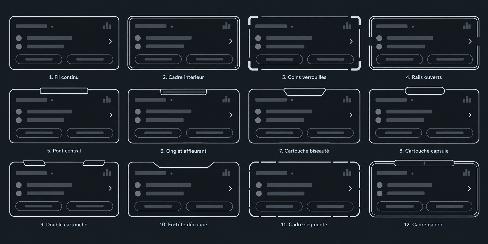
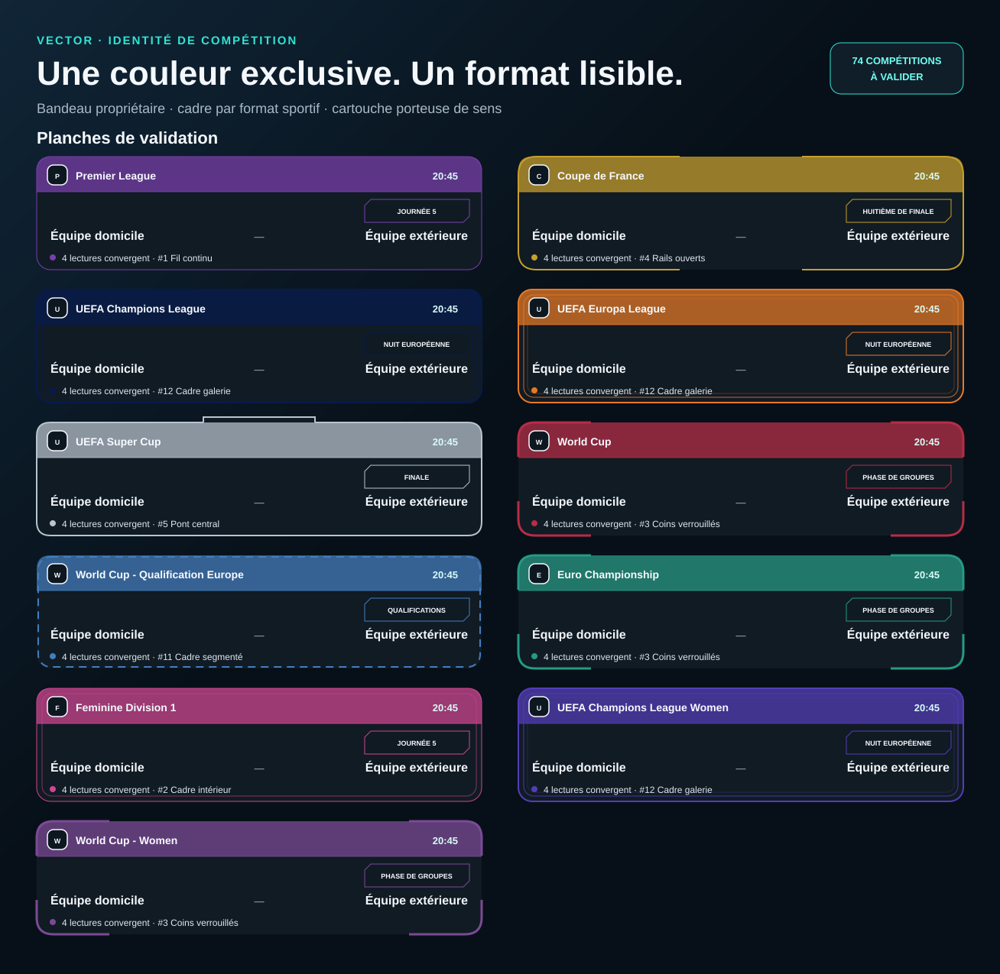

Vector · identité de compétition
Une couleur exclusive.
Un format lisible.
La couleur identifie chaque épreuve. Le cadre et la cartouche racontent le type de match, sans alourdir la liste mobile.
74 COMPÉTITIONS
À VALIDER
À VALIDER
Canvas contractuel
Les 12 silhouettes ci-dessous sont la référence exacte des cadres et cartouches. Les identifiants sont repris dans le registre.

Planches de validation
Les proportions restent compactes ; les silhouettes reproduisent le canvas de référence au lieu de l’interpréter.

Fil continu · championnatCadre intérieur · championnat fémininRails ouverts · coupe nationalePont central · supercoupeCadre galerie · Europe des clubsCoins verrouillés · sélectionsCadre segmenté · qualifications
Registre complet
Ce registre est la future source de vérité : l’ID API décide de la couleur, tandis que la famille décide du cadre et de la cartouche.
| ID | Compétition | Famille | Couleur | Cadre | Cartouche |
|---|---|---|---|---|---|
| 2 | UEFA Champions League | Europe des clubs | #071A4D | #12 Cadre galerie | #12 Capsule galerie |
| 3 | UEFA Europa League | Europe des clubs | #E87924 | #12 Cadre galerie | #12 Capsule galerie |
| 848 | UEFA Europa Conference League | Europe des clubs | #159B7D | #12 Cadre galerie | #12 Capsule galerie |
| 39 | Premier League | Championnat | #7A3FAC | #1 Fil continu | #7 Biseauté |
| 61 | Ligue 1 | Championnat | #2975D9 | #1 Fil continu | #7 Biseauté |
| 140 | La Liga | Championnat | #E95757 | #1 Fil continu | #7 Biseauté |
| 78 | Bundesliga | Championnat | #D83245 | #1 Fil continu | #7 Biseauté |
| 135 | Serie A | Championnat | #276BC4 | #1 Fil continu | #7 Biseauté |
| 94 | Primeira Liga | Championnat | #16835B | #1 Fil continu | #7 Biseauté |
| 95 | Segunda Liga | Championnat | #5AABDD | #1 Fil continu | #7 Biseauté |
| 88 | Eredivisie | Championnat | #F17B38 | #1 Fil continu | #7 Biseauté |
| 144 | Jupiler Pro League | Championnat | #E8B933 | #1 Fil continu | #7 Biseauté |
| 179 | Premiership | Championnat | #7546AD | #1 Fil continu | #7 Biseauté |
| 203 | Süper Lig | Championnat | #E65378 | #1 Fil continu | #7 Biseauté |
| 197 | Super League 1 | Championnat | #2F73B8 | #1 Fil continu | #7 Biseauté |
| 119 | Superliga | Championnat | #DC3E42 | #1 Fil continu | #7 Biseauté |
| 207 | Super League | Championnat | #D14C58 | #1 Fil continu | #7 Biseauté |
| 218 | Bundesliga | Championnat | #A83242 | #1 Fil continu | #7 Biseauté |
| 40 | Championship | Championnat | #3C77A8 | #1 Fil continu | #7 Biseauté |
| 62 | Ligue 2 | Championnat | #83B9EF | #1 Fil continu | #7 Biseauté |
| 136 | Serie B | Championnat | #2B66AD | #1 Fil continu | #7 Biseauté |
| 79 | 2. Bundesliga | Championnat | #D54550 | #1 Fil continu | #7 Biseauté |
| 141 | Segunda División | Championnat | #E49E2E | #1 Fil continu | #7 Biseauté |
| 106 | Ekstraklasa | Championnat | #E13E43 | #1 Fil continu | #7 Biseauté |
| 210 | HNL | Championnat | #D74B55 | #1 Fil continu | #7 Biseauté |
| 209 | Schweizer Cup | Coupe nationale | #E0BB63 | #4 Rails ouverts | #8 Capsule |
| 283 | Liga I | Championnat | #2E578E | #1 Fil continu | #7 Biseauté |
| 253 | Major League Soccer | Championnat | #39A9DF | #1 Fil continu | #7 Biseauté |
| 71 | Serie A | Championnat | #1DA96B | #1 Fil continu | #7 Biseauté |
| 128 | Liga Profesional Argentina | Championnat | #3B72D6 | #1 Fil continu | #7 Biseauté |
| 262 | Liga MX | Championnat | #E87845 | #1 Fil continu | #7 Biseauté |
| 307 | Pro League | Championnat | #0F9991 | #1 Fil continu | #7 Biseauté |
| 98 | J1 League | Championnat | #D4415D | #1 Fil continu | #7 Biseauté |
| 188 | A-League | Championnat | #EEA15A | #1 Fil continu | #7 Biseauté |
| 103 | Eliteserien | Championnat | #3B9A7B | #1 Fil continu | #7 Biseauté |
| 113 | Allsvenskan | Championnat | #E9B231 | #1 Fil continu | #7 Biseauté |
| 164 | Úrvalsdeild | Championnat | #3865A2 | #1 Fil continu | #7 Biseauté |
| 169 | Super League | Championnat | #C23D57 | #1 Fil continu | #7 Biseauté |
| 244 | Veikkausliiga | Championnat | #3C7D96 | #1 Fil continu | #7 Biseauté |
| 292 | K League 1 | Championnat | #E85C59 | #1 Fil continu | #7 Biseauté |
| 531 | UEFA Super Cup | Supercoupe | #B9C4D0 | #5 Pont central | #9 Double cartouche |
| 45 | FA Cup | Coupe nationale | #E84B3D | #4 Rails ouverts | #8 Capsule |
| 48 | League Cup | Coupe nationale | #699BCB | #4 Rails ouverts | #8 Capsule |
| 528 | Community Shield | Supercoupe | #C99C3F | #5 Pont central | #9 Double cartouche |
| 66 | Coupe de France | Coupe nationale | #C7A02C | #4 Rails ouverts | #8 Capsule |
| 526 | Trophée des Champions | Supercoupe | #2B427E | #5 Pont central | #9 Double cartouche |
| 81 | DFB Pokal | Coupe nationale | #D43843 | #4 Rails ouverts | #8 Capsule |
| 529 | Super Cup | Supercoupe | #D73747 | #5 Pont central | #9 Double cartouche |
| 96 | Taça de Portugal | Coupe nationale | #2A9D71 | #4 Rails ouverts | #8 Capsule |
| 550 | Super Cup | Supercoupe | #3BAE83 | #5 Pont central | #9 Double cartouche |
| 143 | Copa del Rey | Coupe nationale | #E54F3F | #4 Rails ouverts | #8 Capsule |
| 556 | Super Cup | Supercoupe | #D85B45 | #5 Pont central | #9 Double cartouche |
| 137 | Coppa Italia | Coupe nationale | #189676 | #4 Rails ouverts | #8 Capsule |
| 547 | Super Cup | Supercoupe | #1B997B | #5 Pont central | #9 Double cartouche |
| 90 | KNVB Beker | Coupe nationale | #DF7830 | #4 Rails ouverts | #8 Capsule |
| 543 | Super Cup | Supercoupe | #EB7D3C | #5 Pont central | #9 Double cartouche |
| 147 | Cup | Coupe nationale | #E44850 | #4 Rails ouverts | #8 Capsule |
| 519 | Super Cup | Supercoupe | #E64C51 | #5 Pont central | #9 Double cartouche |
| 181 | FA Cup | Coupe nationale | #714EAC | #4 Rails ouverts | #8 Capsule |
| 185 | League Cup | Coupe nationale | #C56F46 | #4 Rails ouverts | #8 Capsule |
| 551 | Super Cup | Supercoupe | #E65478 | #5 Pont central | #9 Double cartouche |
| 1 | World Cup | Sélections internationales | #B72C46 | #3 Coins verrouillés | #7 Biseauté |
| 32 | World Cup - Qualification Europe | Qualifications internationales | #427DBE | #11 Cadre segmenté | Passeport |
| 4 | Euro Championship | Sélections internationales | #269A85 | #3 Coins verrouillés | #7 Biseauté |
| 5 | UEFA Nations League | Sélections internationales | #273D86 | #3 Coins verrouillés | #7 Biseauté |
| 9 | Copa America | Sélections internationales | #4281A4 | #3 Coins verrouillés | #7 Biseauté |
| 6 | Africa Cup of Nations | Sélections internationales | #CE8A2C | #3 Coins verrouillés | #7 Biseauté |
| 7 | Asian Cup | Sélections internationales | #B4404A | #3 Coins verrouillés | #7 Biseauté |
| 22 | CONCACAF Gold Cup | Sélections internationales | #D29E26 | #3 Coins verrouillés | #7 Biseauté |
| 536 | CONCACAF Nations League | Sélections internationales | #3D638E | #3 Coins verrouillés | #7 Biseauté |
| 64 | Feminine Division 1 | Championnat féminin | #D04592 | #2 Cadre intérieur | #6 Onglet affleurant |
| 525 | UEFA Champions League Women | Europe des clubs | #533DB9 | #12 Cadre galerie | #12 Capsule galerie |
| 1191 | UEFA Europa Cup - Women | Europe des clubs | #BD5BA7 | #12 Cadre galerie | #12 Capsule galerie |
| 8 | World Cup - Women | Sélections internationales | #7C4A95 | #3 Coins verrouillés | #7 Biseauté |